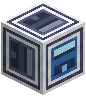

Two-Token Head

Goes where a model's last Linear Layer would. It gives two sets of scores from the same vectors: one for the next token, which is all anyone sees, and one for the token after next, which only training reads. Learning both makes the layers beneath it look further ahead: see The Recipe.
Shapes
A sequence [B×T×C] in, scores [B×T×V] out.
Parameters
Two matrices C×V and two offsets of V: twice a Linear Layer's. The second set is only trained, never asked, and is still counted in what a model weighs.
In PyTorch
loss = F.cross_entropy(self.head1(x)[:, :-1], t[:, 1:]) + 0.3 * F.cross_entropy(self.head2(x)[:, :-2], t[:, 2:])
Making it
The Fabricator makes it from a photomask of Multi-Token Prediction: verify the spec on a Bench, or find a salvaged mask in the ruins, which makes it unfused. See The Bench and the Fabricator.